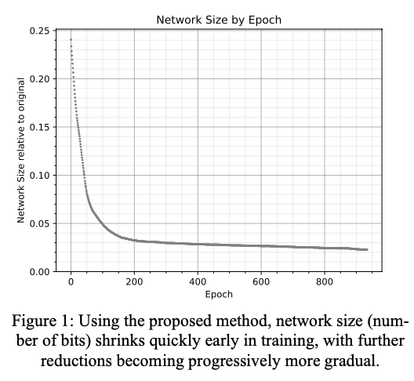
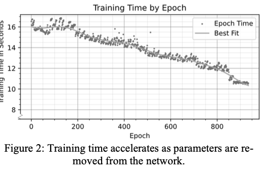
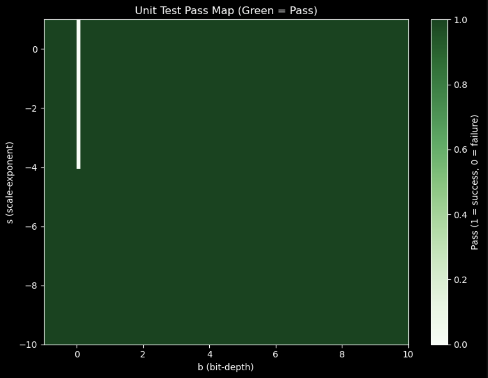
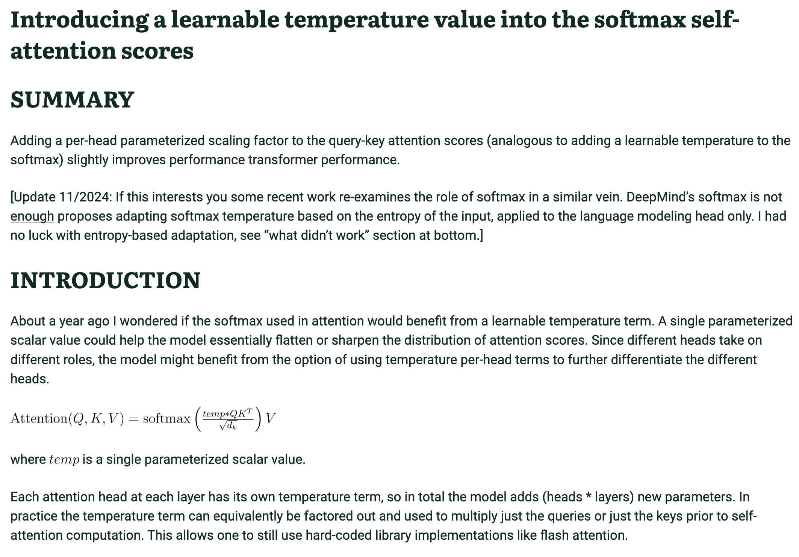

class: center, middle # Mid-Term Presentation > -Adi [Github](https://github.com/adishourya/SelfcompressingDepthWiseAttn) [Experiments](https://www.comet.com/adishourya/convolution-compressing/view/new/panels) --- class: split-slide .lc[ # Agenda 1. Background 2. Experiment 3. Ideas and Questions ] --- class: split-slide .lc[ # .rtext[Problem] ### Process High/Medium Resolution Images for classification or segmentation ] .rcb[ such that we: 1. Use less number of parameters so that they can fit on smaller devices. 2. Achieve "Good" Accuracy/Fidelity. 3. Less FLOPS so we get high throughput in Edge Devices (we dont have any so... Ampere) and Big Devices (Hopper). 4. (Optional) Achieve Smooth Saliency #### .gtext[We will try to solve it using a self-compression based model (through QAT).] ] --- class: split-slide .lc[ # Quantization Function - Differntiable bit depth (b) and exp bit (e) - we will use this quantization function to quantize all the big matrices of our network. - This `q()` looks very similar to any other Q8A. For an example ```py # int8 quant for some scaling factor s #+ and offset o q(x) = clip((x/s)+o,-10,53) ``` ] .rc0[  - [article at](https://arxiv.org/abs/2301.13142) ] --- class: split-slide .lc[ # Quantization Function - Our scaling factor will be given by some exponent bit e. ```py def quantize_weight(x,b=2,e=-8): x_scaled = x/torch.exp2(e) half = torch.exp2(b-1) x_clipped = torch.clip(x_scaled,-1*half,half-1) x_round = torch.round(x_clipped) x_scaled_back = torch.exp2(e) * x_round return x_scaled_back ``` ] .rc0[ <video height="660" width="590" controls> <source src="./scratchpad/presentation/mid-term/QuantizationAnimation.mp4" type="video/mp4"> </video> ] --- class: split-slide .lc[ # Quantization Function - the derivative of a rounding function is either 0 or not-defined. - Since `b` and `e` are inside the rounding function we need STE Rounding. - With STE estimator we can now perform quantization aware training. ] .rcb[ ```py class STERound(torch.autograd.Function): """ same gradient as parent node. Also called as pass through gradient. or Straight Through Estimator. """ @staticmethod def forward(ctx,x): return torch.round(x) @staticmethod def backward(ctx,upstream): """ local jacobian is 1. """ return upstream ``` ] --- class: split-slide .lc[ # Quantization Function - If During Training: - Bit depth increases: counters effect of clipping. - Abs(Exp) bit increases: counters effect of rounding. - if a weight or a group of weight reach a bit depth of 0. - The tensors are pruned for next iteration. ] .rc0[ <video height="660" width="590" controls> <source src="./scratchpad/presentation/mid-term/toSparse.mp4" type="video/mp4"> </video> ] --- class:split-slide .lc[ # Training Objective - we will penalize our model by the current size of the size of the model. - the current size is given by the sum of the layer size of the targeted "quantized" modules. - This also acts as a regularization term. (like the l1 loss which gets penalized by the sum of model's `abs(weights)`) ] .rcb[ ```py with torch.autocast(device_type="cuda", dtype=self.amp_dtype): out = self.model(batch_img) # end of fwd pass # current size of model / init size of model bit_decay = self._qlayersize() / self.qtot_init # add penalty term loss = cross_entropy(out,batch_label) + self.gamma * bit_decay ``` ] --- class:center,top > In my project plan i proposed a model with convolution in skip connections to aid linear attention improve its local inductive bias (which also had some full softmax attention at the start of the layer) # Compression Heuristics Needed .left[ 1. Convolution Heuristics (We get for free from the article, authors did not release code) 2. nn.Linear (Done) 3. Full Sotmax Attention (Decided on Heuristics, not implemented yet) 4. Linear Attention (Not decided on Heuristics) ] .left[ .gtext[Experiments Done:] 1. Pure Convolution Model (No MLP Head to arrive at logits) 2. Convolution + MLP Head .rtext[Experiments to Do]: 1. Conv + Full Softmax Attn + Linear Attn ] --- class: split-slide .lc[ # Convolution Heuristics - We tie a quantization function to each kernel see `__init__` - Calculating Size layer which contributes to the penalty term is proportional to the actual active size of the layer. see `size_layer()` ```py # a much more accurate size would have been size_layer = prods* torch.where(self.b>0,1,0) # but the above only promotes sparsity. #+ (sum of bit depth) promotes both compression and sparsity ``` - We Quantize the weights of the layer every forward pass. see `__call__` - Bad training batches can result in "irreversible" forgetting ] .rcb[ ```py class Qconv(torch.nn.Module): """ weight tying exp_bits and depth_bits note number of output channels is number of filters launched """ def __init__ (self,...): ... # 1 for each kernel (out_channel).. self.exp_bit = torch.ones(out_channels,1,1,1)*e self.depth_bit = torch.ones(out_channels,1,1,1)*b ... def size_layer(self): prods = torch.as_tensor(self.weight.shape[1:]) # height * width * sum of depths of filters -> size = torch.prod(prods) * torch.sum(torch.relu(self.depth_bit)) return size def __call__(self,x): # quantize every forward pass W = self._quantized_weight() return F.conv2d(x,W,padding=self.padding) ``` ] --- class:center,top <video width="1200",height:"1080", controls> <source src="./scratchpad/presentation/mid-term/compressKernels.mp4" type="video/mp4"> </video> --- class: split-slide .lc[ # Pure Convolution Model - [Pure Convolution Experiment](https://www.comet.com/adishourya/convolution-compressing/9e515a01e6a944899be91f42f80cb304?compareXAxis=step&experiment-tab=panels&prevPath=%2Fadishourya%2Fconvolution-compressing%2Fview%2Fnew%2Fpanels&showOutliers=true&smoothing=0&xAxis=step) - we pruned (154-107)/154 ~ 1/3 of the total conv kernels without any accuracy degradation. - .gtext[NOTE], we will obviously not be able to prune the conv_lin kernels as they result directly to logits ] .rcb[ ```py class QPureconvModel(torch.nn.Module): def __init__(self): super().__init__() self.conv1 = Qconv(1, 32,b=2) self.conv2 = Qconv(32,64,b=2) self.bn1 = torch.nn.BatchNorm2d(64) self.conv3 = Qconv(64,32,b=1.5,e=-7) self.conv4 = Qconv(32,16,b=1.3,e=-6) self.bn2 = torch.nn.BatchNorm2d(16) self.pool = torch.nn.MaxPool2d(2, 2) # none of these would be pruned #+ kernel trick to avoid mlp head self.conv_lin = Qconv(16, 10, kernel_size=7,padding=0) def forward(self, x): ... pool2 = self.pool(conv4_out) # flattening trick with conv flat = self.conv_lin(pool2) #B, 10, 1,1 logits = flat.view(flat.size(0),-1) # B,10 return logits ``` ``` Total Conv kernels = 32+64+32+16+10 = 154 ``` ] --- class:split-slide .lc[ # nn.Linear Heuristics - Our Idea follows L1 feature selection. Prune the associated dual basis if the feature does not influence prediction. - So we tie a quantization function to each row (`m`) of nn.Linear - similar to convolution the size layer is proportional to the true size (but not accurate, they cancel out when i divide with total parameters at init). ] .rcb[ ```py class QlinearMLP(torch.nn.Module): """ we will only use this to make mlp heads """ def __init__(self,m,n,...): """ maps R:m->n """ ... self.depth_bit = torch.ones(1,m) * b self.exp_bit = torch.ones(1,m) * e def size_layer(self): return torch.sum(torch.relu(self.depth_bit)) * self.n def __call__(self,x): # quantize weight every forward pass W = self._quantized_weight() return F.linear(x,W,bias=self.linear.bias) ``` ] --- class:center <video width="1200",height:"1080", controls> <source src="./scratchpad/presentation/mid-term/Matrix.mp4" type="video/mp4"> </video> --- class: split-slide .lc[ # nn.Linear Heuristics - [Conv+Linear Experiment](https://www.comet.com/adishourya/convolution-compressing/23b3cc857e2243e4a006ca513c5c5d92?compareXAxis=step&experiment-tab=panels&prevPath=%2Fadishourya%2Fconvolution-compressing%2Fview%2Fnew%2Fpanels&showOutliers=true&smoothing=0&xAxis=step) - we pruned 223/1600 ~(14%) without any accuracy degradation. ] .rcb[ ```py class QconvModel(torch.nn.Module): def __init__(self): super().__init__() self.conv1 = Qconv(1, 16,b=2) self.conv2 = Qconv(16,16,b=2) self.conv3 = Qconv(16,32,b=1.5,e=-7) self.conv4 = Qconv(32,32,b=1.3,e=-6) self.pool = torch.nn.MaxPool2d(2, 2) self.bn1 = torch.nn.BatchNorm2d(16) self.bn2 = torch.nn.BatchNorm2d(32) self.L1 = QlinearMLP(32*7*7, 32) # L2 will never be pruned... self.L2 = QlinearMLP(32, 10) def forward(self, x): # (2 convolutions -> bn -> pool) * 2 ... # then linear layers flat = torch.flatten(pool2, 1) l1 = torch.nn.functional.gelu(self.L1(flat)) l2 = torch.nn.functional.gelu(self.L2(l1)) logits = l2 return logits ``` ``` Total Duals: 32*7*7 + 32 = 1600 Total Conv: 16+16 + 32+32= 96 ``` ] --- class:center,middle # Metrics other than Pruning --- class:split-slide .lc[ # Total Compression <div style="text-align: center;"> <p></p> </div> - Question: How do i calculate actual bit depth of a quantized fp32 (not ours which supports fractional bit depth)? ] .rc0[ #Throughput <div style="text-align: center;"> <p></p> </div> - If training time improves then fwd(+bwd) pass improves.. which implies improvement in throughput ] --- class:center,top # Our results .left[ - .gtext[Total Compression] (Calculated with size of layers): - We got 15% compression in 1000 epochs (intialized with `~70,000` parameters) on *linear layer+ convolutional layer*. - We got 0.2% expansion in 1000 epochs (intialized with `~57,000` parameters) on *pure convolutional layer*. - Article does not say the intialized size of the model nor how it calculates "number of bits" are they just doing 2^2(ceil(b)-1) ? - if so then my linear decrease in the sum of bit depth * (constant) will also look exp decreasing as article. - .rtext[Total Throughput] - no increase in throughput in either of the models. - they observe a linear improvement in training time. ] --- class: center, middle # More Ideas/Questions --- class: split-slide .lc[ # Compressing Attention - Idea : we would like to tie a quantization function to each attention head - .rtext[Logistical Problems]: - the `qkv` of attn heads are initialized inside the device function (see `create_tensor()`) so we cannot broadcast our quantization function to quantize them per head. which means we cannot use off-the shelf implementation flash attention (both softmax and linear attention). - Have to implement for both Ampere and Hopper - 4 implementations (2 big ones). ] .rcb[ ```py def run_flash_attention_fwd(self,..): ... def create_tensor(): q = create_tensor( batch_size, seqlen_q, num_head, head_dim, cutlass_torch.dtype(dtype) ) k = create_tensor( batch_size, seqlen_k, num_head, head_dim, cutlass_torch.dtype(dtype) ) v = create_tensor( batch_size, seqlen_k, num_head, head_dim, cutlass_torch.dtype(dtype) ) o = create_tensor( batch_size, seqlen_q, num_head, head_dim, cutlass_torch.dtype(dtype) ) ... ``` [CuTe's implementation](https://github.com/NVIDIA/cutlass/blob/main/examples/python/CuTeDSL/ampere/flash_attention_v2.py) ```Quick Question : can i email you with questions that i have on writing device functions ? (also layout algebra)``` ] --- class: split-slide .lc[ # Writing Backward Pass for our Quantization function - My Backward Pass does not pass for all unit tests. (passes with atol=1e-6, default:1e-8) - Fails specially for low exp bit cases. - Needs to be fixed before writing bwd pass for flash attn. - [my bwd pass implementation](https://github.com/adishourya/SelfcompressingDepthWiseAttn/blob/d0008898402c54c199a63977d278b7390e65235b/scratchpad/quant/backward_unit_quant.py#L96) ] .rcb[ <p></p> - tests fail when bit depth is 0 ; scary!. ] --- class: split-slide .lc[ # Writing Bwd Pass ```py y = { half-1, x > half-1 -half, x < -half 0, elsewhere } ``` ```py dy/dhalf = { 1, x > half -1 -1, x< -half 0, elsewhere } ``` - This works great for normal cases but fails for special cases. - `-half> half -1` for 0<b<1 and clipped at a single point b=0 [torch_implementation of bwd pass for clip](https://github.com/pytorch/pytorch/blob/53fe804322640653d2dddaed394838b868ce9a26/torch/autograd/_functions/pointwise.py#L95) - [torch.clamp kills gradient at the border from contributor](https://github.com/pytorch/pytorch/issues/7002#issuecomment-384757890) ] .rcb[ ```py def inspect_clip(): x = torch.linspace(-1,1,50) x.requires_grad_() # happens at b=0. as exp2(b-1) = 1/2 half = torch.tensor(0.5) half.requires_grad_() # that is -half = half-1 = -0.5 y = torch.clip(x,-half,half-1) y.retain_grad() print(y) z = y.sum() z.backward() print(y.grad) print(half.grad) #------------------ tensor([-0.5000, ..., -0.5000, -0.5000]) y.grad -> tensor([1., 1., ...., 1.]) half.grad -> tensor(37.) ???? #------------------ # my implementation for half.grad # y = clip(x_round,-half,half-1) ours_half_lj = torch.where(x_round<-1*half,-1, torch.where(x_round>half-1,1,0)) # cases where half is negative. (0<b<1) single_half = torch.allclose(-half,half -1,atol=1e-6) ours_half_lj = (single_half)* half + (-half > half -1)*1 + (-1*half < half -1)*ours_half_lj ours_halfgrad = (y.grad * ours_half_lj).sum() ``` ] --- class: split-slide .loc[ ## Compressing Softmax Attention - tie quantization function to each head. - temperature term can be normalized bit depth across attention head. (guarentees not all attn heads will be pruned) ] .rc1[ <p></p> ] --- class:center,middle # End of slides <!-- slide stuff -->